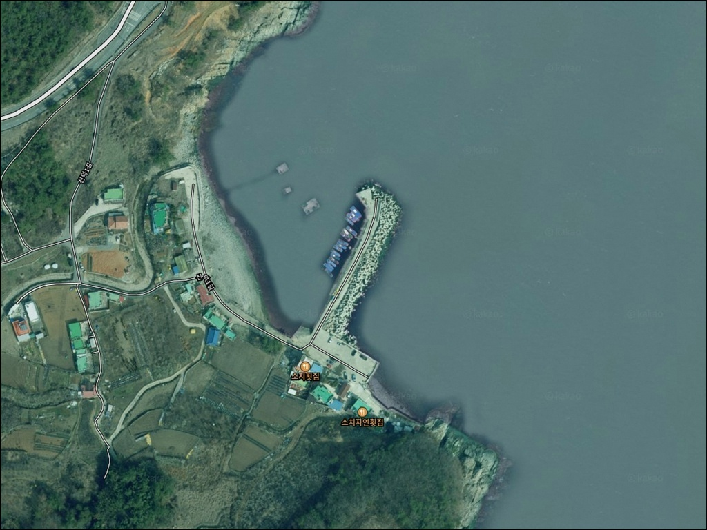
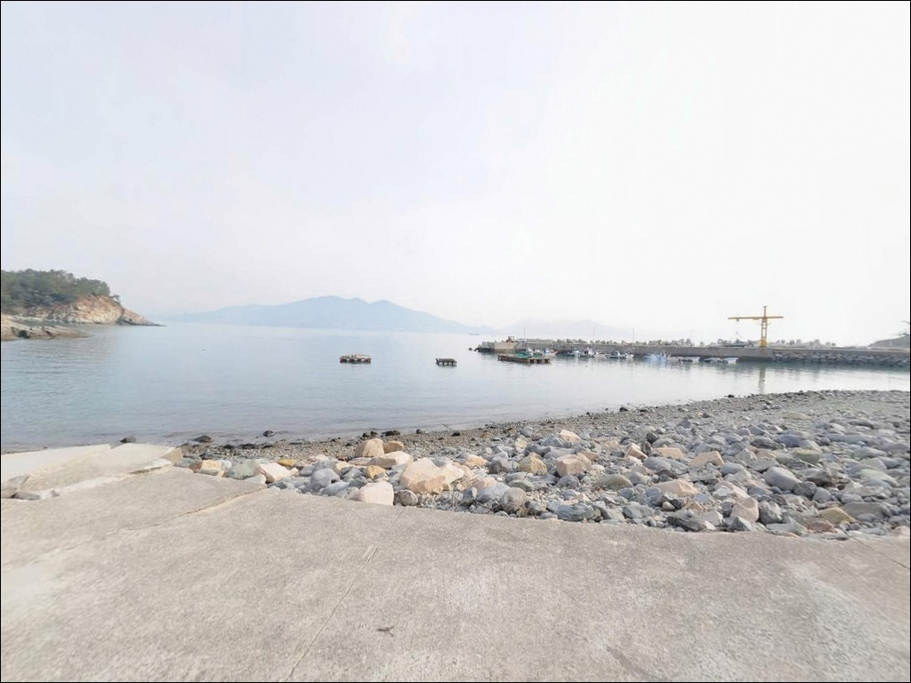
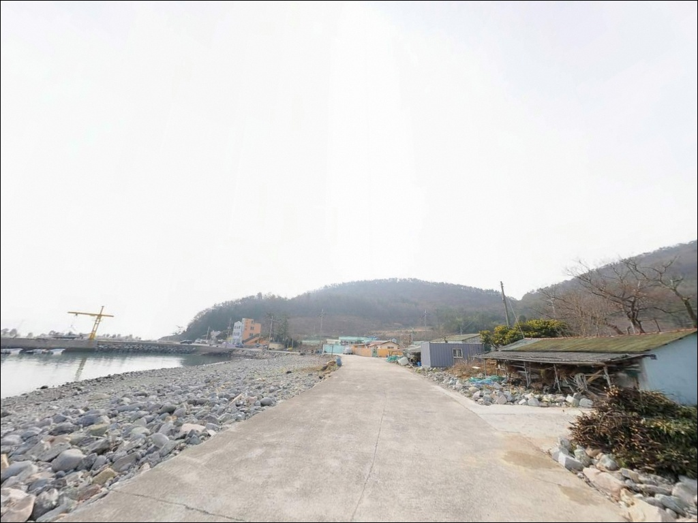
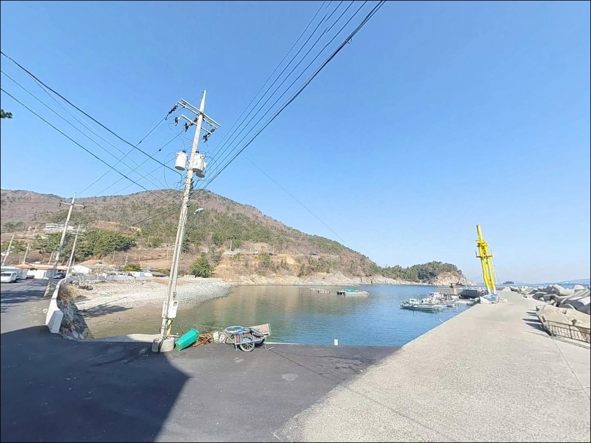
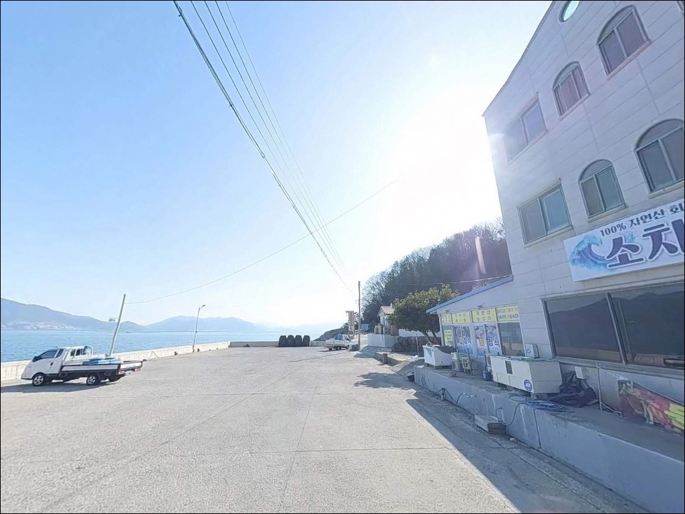
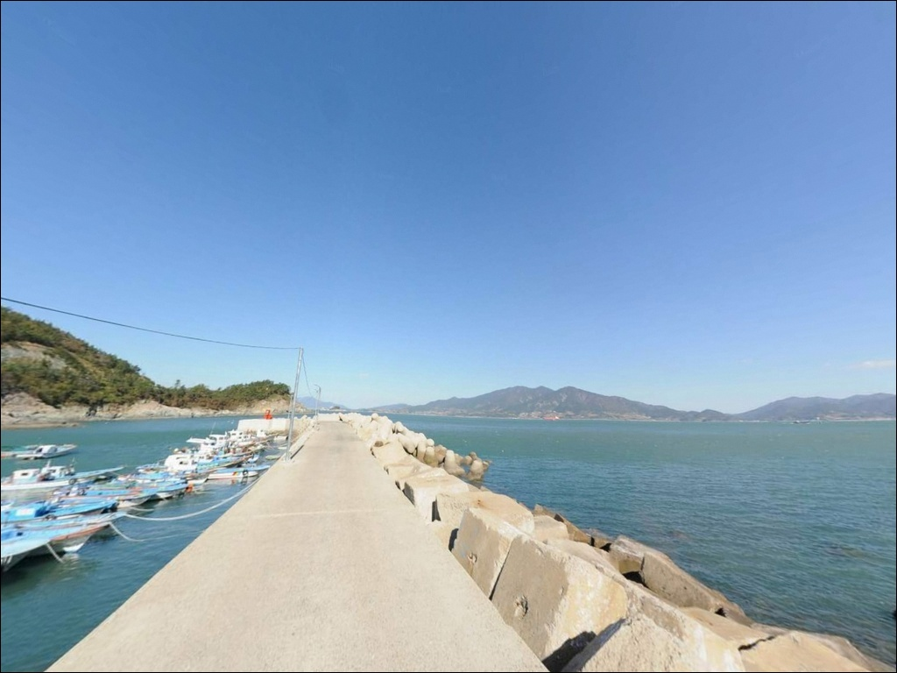
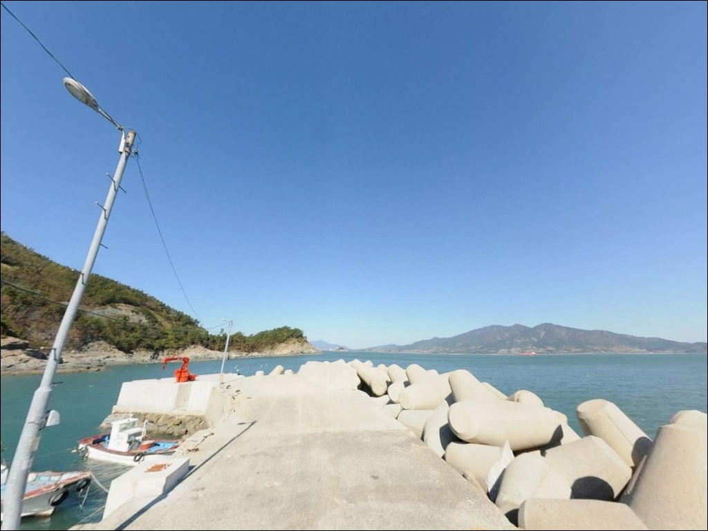
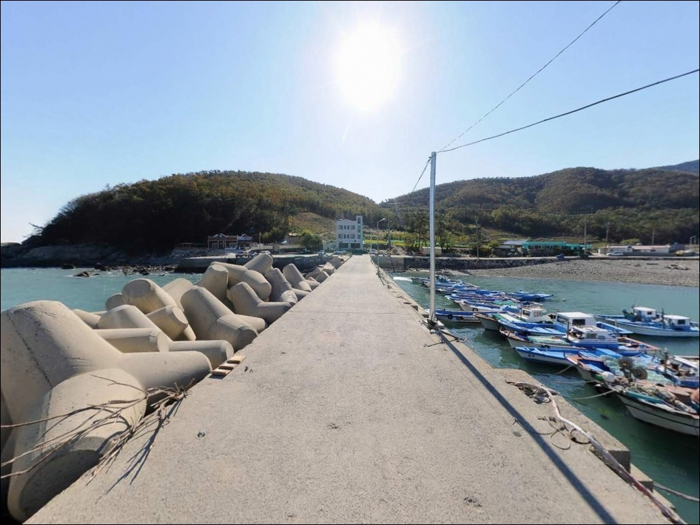
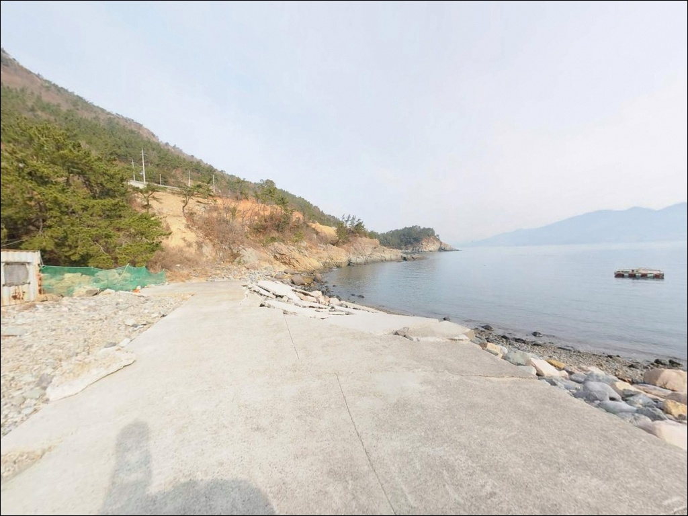

여수 신덕방파제, 얕은 내항 대신 외항 끝단 조류를 타야 살아나는 입질
이 페이지에는 광고(제휴 링크 포함)가 있으며, 광고 링크를 통해 구매하면 운영자가 판매 수익 또는 수수료를 받을 수 있습니다. 포인트 사진: 카카오맵 스카이뷰·로드뷰. 이 페이지의 지도·사진 이미지는 카카오맵의 실제 서비스 이미지와 다를 수 있습니다.


포인트 안내
신덕방파제
전남 여수시 신덕동 604-8
신덕방파제는 방파제 초입과 끝단의
수심 낙차가 뚜렷합니다.
초입부 내항 쪽 얕은 모래 바닥에 자리를 잡으면
루어 반응을 기대하기 어렵고,
외항 끝단 구간에서 조류 흐름을 타야
이 포인트의 조건이 살아납니다.
전남 여수시 신덕동, 신덕해수욕장 북쪽에 위치한
이 방파제는 외해 방향이 열려 있는
노출형 구조입니다.
방파제 끝단으로 갈수록 수심이 깊어지고
조류 영향을 직접 받는 환경으로,
루어·원투·에깅 모두 구사 가능한
복합형 포인트입니다.
이 글은 신덕방파제의 진입 동선,
지형 기반 낚시 여건, 차박 체류 조건에 집중합니다.
조황 단정이나 특정 어종 보장은
이 글의 범위에 포함되지 않습니다.

1. 진입 동선과 차량 접근 조건
여수 시내에서 신덕동 방향으로 진입할 때는
국도 17호선 또는 연안도로를 따라
신덕해수욕장 안내 표지를 기준으로 이동하면 됩니다.
해수욕장 진입로는 포장 도로로 유지되고 있으며,
일반 승용차와 소형 SUV는
진입과 회차 모두 무리 없는 수준입니다.
대형 차량이라면 해수욕장 진입부까지 들어오는
마을 도로 폭을 미리 확인하는 편이 좋습니다.
방파제 입구 공터와 해수욕장 주차 구획이
주차 공간으로 활용됩니다.
선착장 및 물량장 인근에도 여유 공간이 있으나
어선 작업 동선과 겹치지 않는 자리를
먼저 확인하고 주차하는 것이 기본입니다.
방파제 자체의 상부 포장 구간은
낚시 입장 시 도보 이동이 기본입니다.
방파제 끝단까지의 거리는 소형 포구 규모이며,
짧은 거리이나 테트라포드 구간이 포함되어 있어
야간 이동 시 발판 주의가 필요합니다.

2. 차박 환경과 야간 체류 여건
신덕방파제 일대는 신덕해수욕장 주차 공간을
기반으로 차박이 가능한 구조입니다.
해수욕장 주변 주거 밀집도는 낮은 편이라
야간 차량 통행이 많지 않고,
프라이버시 여건은 상대적으로 양호한 편입니다.
방파제와 주차 공간 주변에는 가로등이 설치되어 있어
완전 암흑 환경은 아닙니다.
다만 방파제 끝단 구간은 조명이 약하므로
야간 낚시 시 개인 조명 장비는 반드시 필요합니다.
주말과 성수기에는 해수욕장 이용객이 많아
야간에도 주차 공간이 붐빌 수 있습니다.
민가가 방파제 인근에 형성되어 있는 구조로
소음 관리가 필요한 환경입니다.
낚시 후 하룻밤 조용히 머무는 용도로는
충분히 활용 가능한 공간이나,
성수기 이외의 평일 방문이
차박 체류 여건에 유리합니다.


3. 주변 편의시설 및 인프라 현황
신덕해수욕장 인근에는 공중화장실이 있으며,
마을 내에 소규모 식당과 매점이 형성되어 있습니다.
낚시 전후 기본적인 식사와 간식 보충은
마을 내에서 해결할 수 있는 편입니다.
편의점과 주유소는 여수 시내 방향,
삼일동 또는 여천동 방면으로 이동하면
차량 기준 10분 내외 거리에서 이용 가능합니다.
낚시 채비와 소품은 인근 상암동 또는
만성리 방향에 낚시점이 위치하므로
출발 전 미리 준비하는 편이 효율적입니다.
응급 상황 발생 시에는 여수 엑스포역 인근
병의원과 대형마트까지 접근이 가능합니다.
여수 북동부 해안 접근 특성상
기본 물품과 연료는 출발 전에 갖추는 것이
현실적인 준비 방식입니다.

4. 방문 전 반드시 챙겨야 할 준비사항
여수 해역은 물때 변화에 따라 조류 세기가 달라집니다.
신덕방파제 외항 끝단 구간은
사리 전후 유속이 빨라져 채비 흐름이 커지므로,
바다타임에서 신덕항 기준 물때를 미리 확인하고
조금 전후 또는 정조 타이밍을 노려
입장 시각을 조율하는 것이 유리합니다.
남해안 특성상 기상 변화가 빠른 편입니다.
출발 당일 오전에 기상청 예보를
다시 한번 확인하는 것이 헛걸음을 막는 조건이고,
테트라포드 구간이 포함된 방파제이므로
야간에는 미끄럼 방지 신발과 헤드랜턴을
반드시 챙겨야 합니다.
마을 선착장과 물량장이 방파제 인근에 있어
어선 이동 동선을 방해하지 않는 자리를
먼저 확인한 뒤 자리를 잡는 것이 기본 매너입니다.
구명조끼는 방파제 외항 낚시에서
기본 착용 수칙입니다.

5. 외항 끝단 수심이 조과를 가르는 이유
신덕방파제의 지형적 특징은
내항과 외항 사이의 수심 낙차에 있습니다.
방파제 초입 내항 쪽은 모래 바닥 기반으로
수심이 얕게 형성되어 있고,
중간 구간을 지나 끝단으로 갈수록
수심이 깊어지면서 조류가 직접 닿는 구간이
형성됩니다.
테트라포드 발 밑과 방파제 끝단 주변은
암반 혼합 지형으로 전환되어
볼락·노래미 계열 어종의 서식 환경이
자연스럽게 갖춰진 구조입니다.
방파제 끝단 외항 기준 수심은
만조 시 상당한 수심이 확보되는 구간이며,
이 구간이 이 포인트의 메인 자리입니다.
원투낚시 대상으로는 방파제 외항 방향보다
내항 모래 바닥 구간이 밑걸림이 적어
더 유리한 편입니다.
이 일대 여수 해역에서 기대해볼 수 있는 어종은
볼락, 노래미, 감성돔, 숭어, 도다리 계열이며,
가을 시즌에는 갑오징어와 갈치 계열이
추가 대상으로 올라옵니다.
최신 조황은 출조 전에 반드시 검색해 보시기 바랍니다.


6. 포인트 지형에 어울리는 낚시 스타일
루어낚시는 이 포인트에서 가장 폭넓게
활용할 수 있는 방식입니다.
방파제 끝단 외항 석축 경계면과
테트라포드 주변은 볼락·노래미 루어낚시에
지형 조건이 잘 맞습니다.
야간 가로등 집어 효과가 있는 구간이라
야간 라이트게임 조건이 형성되는 편입니다.
에깅은 가을 시즌에 시도해볼 수 있는 방식입니다.
여수 동부권 방파제 일대는 가을 갑오징어 시즌에
에깅 활성도가 올라오는 해역 패턴을 보입니다.
방파제 외항 방향으로 캐스팅하여
테트라 경계 바닥을 천천히 끌어오는 방식이
이 포인트 구조에 맞습니다.
원투낚시는 내항 모래 바닥 방향이 주 공략 구간입니다.
바닥이 비교적 깨끗한 편으로 밑걸림이 적고,
도다리·숭어·붕장어 계열이
바닥층 대상 어종으로 기대되는 지형 조건입니다.
찌낚시는 방파제 중간~끝단 외항 측에서
조류가 흐르는 라인을 형성하는 구간을
기점으로 활용합니다.

7. 대안 포인트와 플랜 B 동선
신덕방파제 주차 공간이 혼잡하거나
낚시 조건이 기대에 미치지 못할 때
가장 먼저 이동할 수 있는 대안은
인접한 소치 방파제와 곶부리 갯바위입니다.
신덕방파제에서 500m~1km 거리로
같은 해안선에 위치하며,
찌낚시와 루어 모두 운용 가능한
암반형 지형입니다.
국동항 방파제는 여수 시내 방향으로
5~7km 거리에 위치한 대안 포인트입니다.
낚시 자료와 조황 정보가 더 풍부하고
낚시점 등 주변 인프라가 집중된 곳으로,
신덕방파제를 처음 찾는다면
국동항을 기점으로 탐색 동선을 짜는 방식이
효율적입니다.
차박을 메인으로 계획 중이라면
만성리 검은모래해변 주차 공간이
대안이 됩니다.
여수 시내와 가깝고 편의시설이 더 집중되어 있으나
관광객 유동 인구가 많은 편이므로,
조용한 환경보다 편의 접근성을 우선한다면
이 쪽을 검토하는 편이 낫습니다.

여수 북동부 해안에서
끝단 외항 자리를 잡을 수 있다면
신덕방파제는 충분한 포인트입니다
루어와 원투낚시를 고루 구사하거나
가을 에깅 시즌에 여수 동부권을 노리는 낚시인이라면
신덕방파제는 접근성과 지형 조건 모두
무난하게 맞는 구조입니다.
방파제 끝단 외항 자리를 먼저 잡고
조류 흐름이 살아 있는 타이밍에 입장하는 것이
이 포인트를 제대로 활용하는 방식입니다.
반면 편의시설이 가까이 있기를 원하거나
넓은 주차 공간에서 여유롭게 차박을 즐기고 싶다면
국동항이나 만성리 쪽을 기점으로 잡는 편이
더 편리합니다.
물때 확인, 기상 확인, 진입로 사전 점검—
이 세 가지를 갖추고 찾는다면
여수 북동부 해안에서 조용한 하루를
보내기에 나쁘지 않은 곳입니다.
낚시를 마치고 방파제 옆에 차를 세우고
하룻밤 바다 소리를 들으며 쉬어가는 일정이라면,
신덕방파제는 거창하지 않아도
충분히 여운이 남는 포인트가 될 수 있습니다.